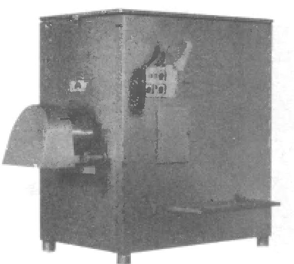

<!DOCTYPE html PUBLIC "-//W3C//DTD XHTML 1.0 Strict//EN" "http://www.w3.org/TR/xhtml1/DTD/xhtml1-strict.dtd">
<html xmlns="http://www.w3.org/1999/xhtml">
<head>
<meta name="keywords" content="" />
<meta name="description" content="Очередной сайт, созданный при помощи TurboSite" />
<meta http-equiv="content-type" content="text/html; charset=utf-8" />
<title>волчок PC-160 - Электронный учебник</title>
<link href="style.css" rel="stylesheet" type="text/css" media="screen" />
<script type="text/javascript" src="jwplayer/jwplayer.js"></script>
<meta name="generator" content="TurboSite 1.7.1" />

</head>

<body>
<div id="wrapper">
	<div id="header-wrapper">
	<div id="header">
		<div id="logo">
			<h1><a href="index.html">Электронный учебник</a></h1>
			<p>Технология производсва варенных колбас</p>
		</div>
	</div>
	</div>
	<!-- end #header -->
	<div id="page">
	<div id="page-bgtop">
	<div id="page-bgbtm">
		<div id="content">
			<div class="post">
				<h2 class="title">волчок PC-160</h2>
				<div style="clear: both;">&nbsp;</div>
				<div class="entry">
					
<P align=center></P>
<BLOCKQUOTE style="MARGIN-RIGHT: 0px" dir=ltr>
  <P class=MsoNormal 
  style="TEXT-ALIGN: justify; MARGIN: 0cm 0cm 0pt -1cm; TEXT-INDENT: 1cm"><B 
  style="mso-bidi-font-weight: normal"><I 
  style="mso-bidi-font-style: normal"><SPAN 
  style="mso-fareast-font-family: Calibri; mso-fareast-language: EN-US; mso-fareast-theme-font: minor-latin"><FONT 
  face=""><FONT size=+0><FONT size=+0>Волчки фирмы «Саlо» (Испания) 
  предназначены для перемешивания, измельчения мясного сырья и получения фарша. 
  Конструкция волчков<SPAN style="mso-spacerun: yes">&nbsp; 
  </SPAN>распространенной формы в виде прямоугольного силового каркаса, 
  облицованного панелями из нержавеющей стали, на четырех регулируемых опорах. В 
  верхней части каркаса находится загрузочный бункер увеличенной формы с 
  предохранительной решеткой, туда загружается сырьё. В средней части каркаса 
  расположены механизмы подачи, которые перемешивают и измельчают сырье. В 
  нижней части каркаса установлены электроприводы и другие узлы и детали, 
  обеспечивающие надежную работу волчка. На передней боковой панели размещены 
  пульт управления и откидывающаяся ступенька для визуального обзора бункера. 
  Выходная горловина для фарша расположена на левой торцевой поверхности 
  каркаса, оттуда выходит готовый фарш. Она закрывается в процессе эксплуатации 
  направляющим кожухом.<o:p></o:p></FONT></FONT></FONT></SPAN></I></B></P>
  <P class=MsoNormal 
  style="TEXT-ALIGN: justify; MARGIN: 0cm 0cm 0pt -1cm; TEXT-INDENT: 1cm"><B 
  style="mso-bidi-font-weight: normal"><I 
  style="mso-bidi-font-style: normal"><SPAN 
  style="mso-fareast-font-family: Calibri; mso-fareast-language: EN-US; mso-fareast-theme-font: minor-latin"><FONT 
  style='face: ""'></FONT><o:p></o:p></SPAN></I></B>&nbsp;</P></BLOCKQUOTE>
<P style="MARGIN-RIGHT: 0px" dir=ltr align=left><FONT 
style='face: ""'></FONT>&nbsp;</P>

				</div>
			</div>
		<div style="clear: both;">&nbsp;</div>
		</div>
		<!-- end #content -->
		<div id="sidebar">
			<ul>
				<li>
					<ul>
						<li><a style="font-weight: bold; " href="index.html">Электронный учебник</a></li>

					</ul>
				</li>
				<li>
					<h2></h2>
					<ul>
						<li><a style="font-weight: bold; " href="page17.html">Содержание</a></li>
<li><a style="font-weight: bold; " href="page2.html">Характеристика сырья и готовой продукции</a></li>
<li><a style="font-weight: bold; " href="page3.html">Технологическая схема производственного процесса</a></li>
<li><a style="" href="page4.html">Подготовка  сырья</a></li>
<li><a style="" href="page5.html">Измельчение мясного сырья</a></li>
<li><a style="" href="page6.html">Посол</a></li>
<li><a style="" href="page7.html">Приготовление фарша</a></li>
<li><a style="" href="page8.html">Формование</a></li>
<li><a style="" href="page9.html">Термическая обработка</a></li>
<li><a style="" href="page10.html">Проверка и упаковывание</a></li>
<li><a style="font-weight: bold; " href="page14.html">Технология производства</a></li>
<li><a style="font-weight: bold; " href="page21.html">Волчок</a></li>
<li><a style="font-weight: bold; " href="page20.html">Фаршемешалка</a></li>
<li><a style="font-weight: bold; " href="page19.html">Куттер</a></li>
<li><a style="font-weight: bold; " href="page29.html">Шпигорезка</a></li>
<li><a style="font-weight: bold; " href="page18.html">Шприц</a></li>
<li class="active"><a style="" href="page11.html">волчок PC-160</a></li>
<li><a style="" href="page22.html">волчок К7 ФВП 160-01</a></li>
<li><a style="" href="page23.html">работа волчка  MG-130</a></li>
<li><a style="" href="page24.html">работа волчка  К7-ФВП-200</a></li>
<li><a style="" href="page25.html">работа волчка  для измельчения замороженного мяса JR</a></li>
<li><a style="" href="page15.html">фаршемешалка VVS200</a></li>
<li><a style="" href="page27.html">Фаршемешалка К6-ФММ-150</a></li>
<li><a style="" href="page26.html">работа фаршемешалки ИПКС-019-150</a></li>
<li><a style="" href="page12.html">куттер Л5-ФБК</a></li>
<li><a style="" href="page28.html">работа куттера вакуумного ВК-125</a></li>
<li><a style="" href="page13.html"> шприц ФШ2-ЛМ</a></li>
<li><a style="" href="page30.html">работа шпигорезки Ruhle SR 1 - SR 1 Turbo</a></li>

					</ul>
				</li>
				
			</ul>
		</div>
		<!-- end #sidebar -->
		<div style="clear: both;">&nbsp;</div>
	</div>
	</div>
	</div>
	<!-- end #page -->
</div>
	<div id="footer">
		<p>Автор:Келасев Александр Владимирович | <a href="http://www.freecsstemplates.org/">Free CSS Templates</a> | <a href="http://brullworfel.ru/turbosite">TurboSite</a></p>
	</div>
	<!-- end #footer -->
</body>
</html>
